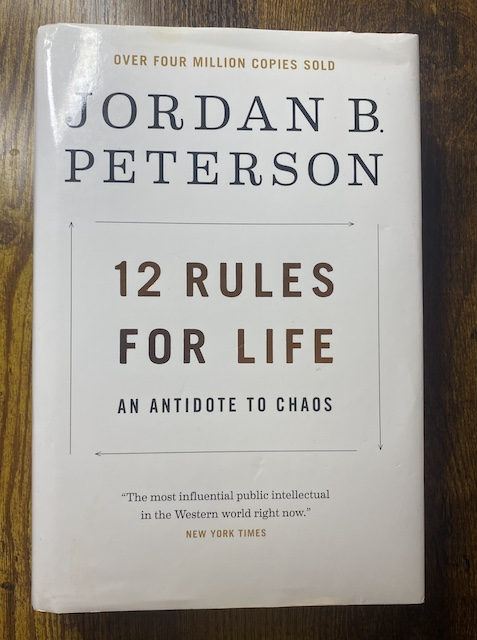
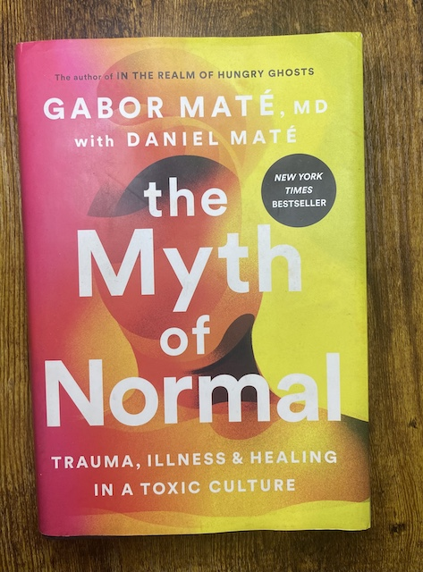
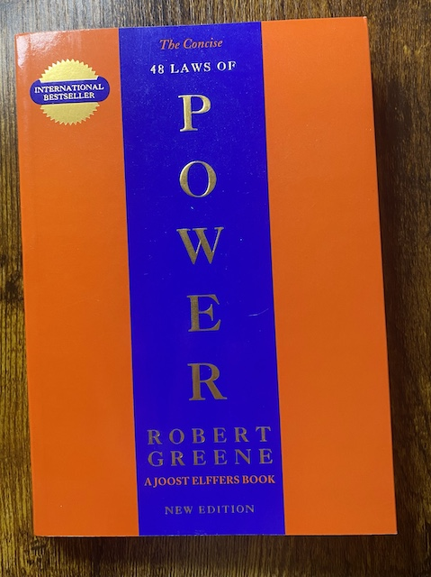
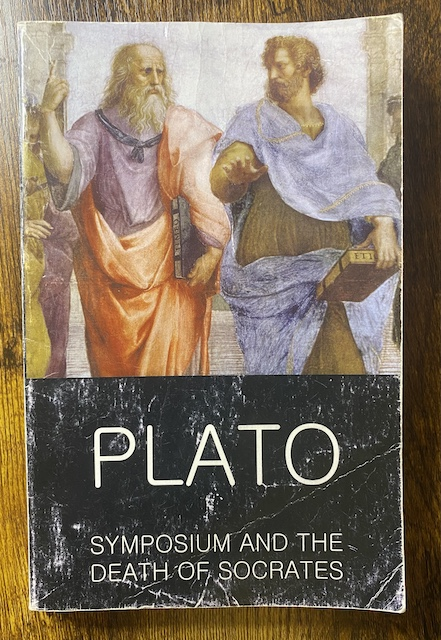

Must Reads
12 Rules For Life by Jordan B Peterson
This is one of my top all time favorite books. Dr. Peterson for those who do not know is a clinical psychologist from Canada. This book, which can be assumed from the title, is his first 12 rules to life. He has countless books and has gotten very popular in the recent years. It is on my list of must reads for any reader out there.
The Myth of Normal by Gabor Maté MD and Daniel Maté
Gabor Maté is a medical doctor who practices family medicine in Canada. Not only is he a medical doctor but also a free thinker,philosopher, and very wise person. He is a Hungarian Jew who has quite the accomplishments under his belt. This book approaches medicine in a whole new fashion as he reminds the world of the ancient wisdom that mental health is directly tied with physical health. It touches on the many facets of life and is also on my list for must reads.
Current Favorites
48 Laws of Power by Robert Greene
Robert Greene's "The 48 Laws of Power" distills centuries of historical wisdom into 48 strategic laws aimed at mastering the dynamics of power. Each law offers practical advice on gaining, maintaining, and wielding influence, from "Never Outshine the Master" to "Assume Formlessness." Through vivid anecdotes and historical examples, Greene reveals the often harsh realities of power, emphasizing the importance of strategy, manipulation, and caution. This book serves as a pragmatic guide for anyone seeking to navigate social hierarchies and exert influence effectively.
Symposium and the Death of Socrates
In this book we get the combined "Symposium" and "Death of Socrates".In Plato's "Symposium," guests at a lively banquet share their views on love, from physical attraction to the love of wisdom. Socrates, referencing Diotima, describes love as a journey from appreciating physical beauty to understanding the divine. Meanwhile, "The Death of Socrates," recounted in "Phaedo," portrays Socrates' final moments discussing the soul and the afterlife with his friends before calmly drinking poison. These works offer profound insights into love, philosophy, and the acceptance of death, showcasing Socrates' unwavering commitment to his beliefs.